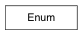

Enumerated type
Get an index value from a key This method always returns an index. If a valid index is passed instead of a key, the index will be returned unchanged. This is useful when you need an index, but are not certain whether you are starting with a key or an index.
>>> units = Enum('units', ['invalid', 'inches', 'feet', 'yards', 'miles', 'millimeters', 'centimeters', 'kilometers', 'meters'])
>>> units.getIndex('inches')
1
>>> units.getIndex(3)
3
>>> units.getIndex('hectares')
Traceback (most recent call last):
...
ValueError: invalid enumerator key: 'hectares'
>>> units.getIndex(10)
Traceback (most recent call last):
...
ValueError: invalid enumerator index: 10
Get a key value from an index This method always returns a key. If a valid key is passed instead of an index, the key will be returned unchanged. This is useful when you need a key, but are not certain whether you are starting with a key or an index.
>>> units = Enum('units', ['invalid', 'inches', 'feet', 'yards', 'miles', 'millimeters', 'centimeters', 'kilometers', 'meters'])
>>> units.getKey(2)
'feet'
>>> units.getKey('inches')
'inches'
>>> units.getKey(10)
Traceback (most recent call last):
...
ValueError: invalid enumerator index: 10
>>> units.getKey('hectares')
Traceback (most recent call last):
...
ValueError: invalid enumerator key: 'hectares'
return a list of keys as strings